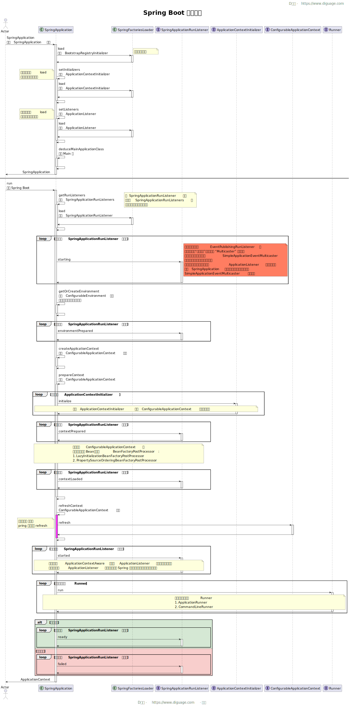

前言
本文档是 D瓜哥 阅读 Spring Boot 源码以及相关文档时的笔记。对学习内容做一些总结和提炼，分享出来也方便大家一起学习，共同进步。
友情支持
如果您觉得这个笔记对您有所帮助，看在D瓜哥码字的辛苦上，请友情支持一下，D瓜哥感激不尽，😜
|
|


有些打赏的朋友希望可以加个好友，欢迎关注D瓜哥的微信公众号，这样就可以通过公众号的回复直接给我发信息。

| 公众号的微信号是: jikerizhi （“极客日志”全拼）。因为众所周知的原因，有时图片加载不出来。如果图片加载不出来可以直接通过搜索微信号来查找我的公众号。 |
官网及版本库
本文档的版本库托管在 Github 上，另外单独发布。
- “地瓜哥”博客网
-
https://www.diguage.com/ 。D瓜哥的个人博客。欢迎光临，不过，内容很杂乱，请见谅。不见谅，你来打我啊，😂😂
- 本文档官网
-
https://diguage.github.io/spring-boot/ 。为了方便阅读，这里展示了处理好的文档。阅读请点击这个网址。
- 本文档版本库
-
https://github.com/diguage/spring-boot 。由于组织方式的特殊性，坦白讲，不建议大家发 PR。有问题，欢迎发 Issue 讨论。
2. 启动流程
1
2
3
4
5
6
7
8
9
10
11
12
13
14
15
16
17
18
19
20
21
22
23
24
25
26
27
28
29
30
31
32
33
package com.diguage.truman;
import org.slf4j.Logger;
import org.slf4j.LoggerFactory;
import org.springframework.boot.CommandLineRunner;
import org.springframework.boot.SpringApplication;
import org.springframework.boot.autoconfigure.SpringBootApplication;
import org.springframework.boot.context.properties.EnableConfigurationProperties;
import org.springframework.context.annotation.Configuration;
/**
* Truman 应用
*
* @author D瓜哥 · https://www.diguage.com
* @since 2021-08-04 08:50:57
*/
@Configuration
@EnableConfigurationProperties
@SpringBootApplication
public class TrumanApplication implements CommandLineRunner {
private static final Logger logger = LoggerFactory.getLogger(TrumanApplication.class);
public static void main(String[] args) {
SpringApplication.run(TrumanApplication.class, args);
}
@Override
public void run(String... args) throws Exception {
logger.info("Start……");
}
}

1
2
3
4
5
6
7
8
9
10
11
12
13
14
15
16
17
18
19
20
21
22
23
24
25
26
27
28
29
30
31
32
33
34
35
36
package com.diguage.truman;
import lombok.extern.slf4j.Slf4j;
import org.junit.jupiter.api.Test;
import org.junit.jupiter.api.extension.ExtendWith;
import org.springframework.boot.test.context.SpringBootTest;
import org.springframework.test.context.bean.override.mockito.MockitoBean;
import org.springframework.test.context.junit.jupiter.SpringExtension;
import static org.assertj.core.api.Assertions.assertThat;
/**
* MockBean 测试
*
* @author D瓜哥 · https://www.diguage.com
* @since 2021-08-04 08:50:57
*/
@Slf4j
@SpringBootTest(classes = TrumanApplication.class)
@ExtendWith(SpringExtension.class)
public class MockBeanTest {
@MockitoBean
private Runnable run;
@Test
public void test() {
assertThat(this.run).isNotNull();
assertThat(this.run).isInstanceOf(Runnable.class);
// org.mockito.codegen.Runnable$MockitoMock$XXXXX
// 从这里可以看出，MockBean 是由 Mockito 创建的 Mock。
// 底层是 Byte Buddy 利用字节码编辑技术动态生成的类。
log.info("class={}", this.run.getClass().getName());
}
}